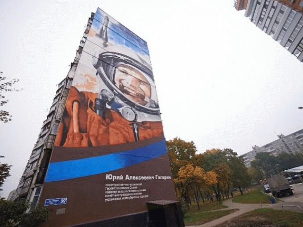

Це цікаво
Найбільше графіті з’явилось у Києві
У киян випала гарна нагода насолодитися ще однією цікавинкою міста, до того ж тільки намальованою – найбільш-рекордним в Україні трьохповерховий малюнок у вигляді графіті. Таке творіння було забезпечене при підтримки пивної марки Stare Misto, креативного агентства Lovemarks спільно з молодими художниками spray away.

Чотирьохповнерховий старий будиночок, що на вулиці Велика Житомирська, має тепер оновлений фасад. Тематично кожному поверху відповідає певна сцена та, відповідно, жанр.

Умовно картина поділена на стару епоху з пивною корчмою, розміщеною на першому поверсі, XIX століття, що на другому та зображення «дещо з сучасності». Грабіжник, який намагається влізти до квартири, чоловік, котрий шукає коханця дружини – центральний епізод графіті. А возвеличує зображення сучасна молодь на балконі. Тож маємо традиційні сходинки: від минулого до сьогодення.
До речі, графіті, яке намальоване на стіні (друга назва мурал), кожен може прочитати по-різному, – воно ж не тільки зберігає ілюзію об’єму. Так, якщо детально придивитися, то побачите і самого автора цієї роботи у верхньому правому кутку: звисаючи з даху будинку, він розписує стіну. Таким чином, перед нами картина самого процесу створення шедевру художником.
Загальна площа такого графіті – 255 кв.м. Ескіз його виготовлявся більше 7 місяців, а перенесення малюнка здійснилося всього за 3 тижні. Тепер і мешканці міста, і гості можуть побачити цю картину не тільки на вулиці Києва, але й у Книзі рекордів України.
Інкогніто з Донецька
У Харкові створили найбільше графіті в Україні, яке ввійшло до Книги рекордів України. На малюнку зображений великий космонавт Юрій Гагарін.

Розміри малюнка сягають більш 451 кв. м, його висота - 35,25 метра, ширина - 12,81 метра.
"Цей рекорд складно буде побити. Якщо бажаючі і знайдуться, то їм доведеться малювати на 16-поверхових або 24-поверхових будівлях", - зауважив представник книги рекордів Віталій Зорін.
Зазначимо, над створенням графіті працювало 4 художники. Працювати над портретом вони почали на початку жовтня. На весь малюнок був згаяний не менше півтисячі балончиків фарби 15 різних відтінків.
Назад
Вгору